1. README
2 Hawk01
2.1 软件介绍
软件整体界面如下
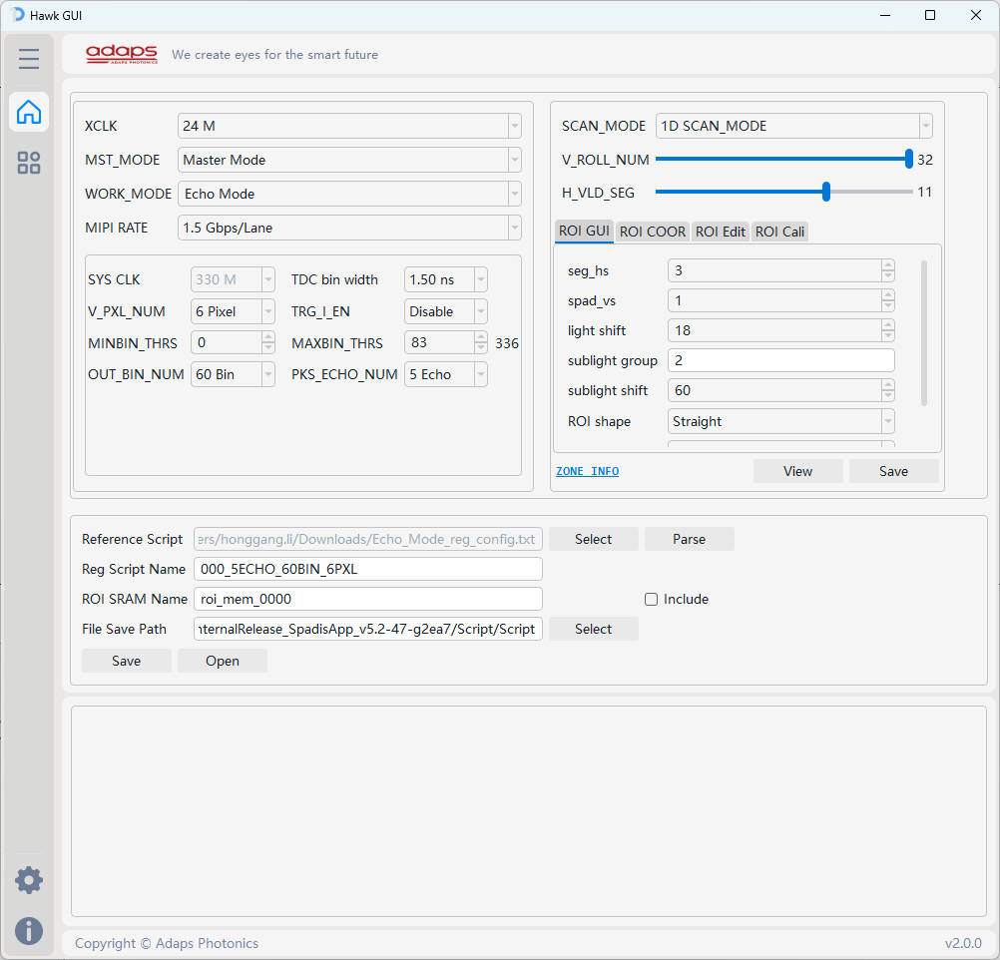
2.2 Script配置界面
2.2.1 寄存器相关配置介绍
程序会根据选择的配置, 基于基准脚本, 生成新的寄存器配置脚本. 寄存器配置脚本支持的功能请跳转 寄存器配置生成功能说明 进行查看
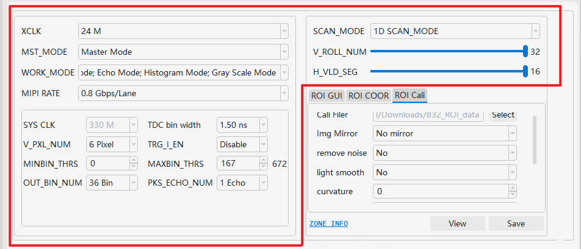
- XCLK: PLL_CLKIN 的输出参考时钟, 可配置为24M或25M
- MST_MODE: 寄存器配置, 芯片是作为 Slave or Master
- WORK_MODE: 寄存器配置, 芯片工作模式选择, 可多选, 同时选择所有4种工作模式, 保存时则生成4种模式的系统配置脚本
- MIPI RATE: MIPI 速率配置, 下拉选择, 0.8 / 1.0 / 1.2 / 1.5 Gbps/Lane
- SYS_CLK: 系统时钟, TDC bin width配置后自动设置好系统时钟, 系统时钟支持: 200M、250M、330M
- TDC bin width: 下拉选择, 0.75 / 1.00 / 1.25 / 1.50 / 2.00 / 2.50 ns
- V_PXL_NUM: 寄存器配置, V_PXL_OUT_NUM
- TRG_I_EN: 寄存器配置, TRG_I Enable or Disable, 根据硬件设计配置
- MINBIN_TRHS: 寄存器配置, 修改配置时自动计算 BIN_NUMBER
- MAXBIN_TRHS: 寄存器配置, 修改配置时自动计算 BIN_NUMBER
- OUT_BIN_NUM: 寄存器配置
- PKS_ECHO_NUM: 寄存器配置
- SCAN_MODE: 寄存器配置, Rolling方式, 1D or 2D scan_mode
- V_ROLL_NUM: 寄存器配置, 垂直方向Rolling次数, 选择范围: 1~32次
- H_ROLL_NUM: 寄存器配置, 水平方向ROlling次数, 选择范围: 1~16次(仅 2D scan mode 配置)
- H_VLD_SEG: 寄存器配置, 每次Rolling打开的段数, 1~16段
2.2.2 ROI GEN
ROI_GEN 主要用于生成 ROI 数据, 需要搭配 SCAN_MODE、V_ROLL_NUM、H_ROLL_NUM、H_VLD_SEG 配置生成 ROI 数据
2.2.2.1 ROI GUI
根据界面上相关字段配置, 直接生成 ROI 数据
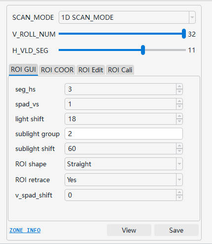
-
seg_hs: horizontal starting coordinates, 表示水平方向起始段数, 以segments为单位, 配置值1~16
-
spad_vs: vertical starting coordinates, 表示垂直方向起始坐标, 以spad为单位, 配置值范围: 1~576
-
light shift: 每次v_rolling, 当前光条相对于上一次v_roling光条的偏移spad个数
-
sublight group: 1次 rolling 开启 6 行 pixel, 可以将 6 行 pixel 按需求分组. 使用示例
1 (1 行 pixel 为 1 组, 共 6 组)2 (2 行 pixel 为 1 组, 共 3 组)2, 4 (共 2 组, 第一组 2 行, 第二组 4行)1, 3, 2 (共 3 组, 第一组 1 行, 第二组 3 行, 第三组 2 行)
ps: 组与组之间使用英文逗号分隔
-
sublight shift: 每次rolling, 会打开6段子光条, 每段子光条与子光条之间偏移的spad个数
-
ROI shape: 光条的形状, 直线或者曲线, 此配置只为展示我们spad多样性, 实际使用以标定的roi为准; （此配置只在1D scan下生效）
-
ROI retrace: 光条纵坐标超过 576 之后, 是否需要绕回
-
v_spad_shift:
- 1D scan: 子光条段与段之间在垂直方向上spad的偏移个数
- 2D scan: 每次h_rolling, 当前rolling的光条相对前一次rolling的光条在垂直方向上spad的偏移个数
-
h_seg_shift: 此配置只在2D scan下生效, 表示每次h_rolling的起始位置相对与上次rolling的起始位置在水平方向上偏移的段数
2.2.2.2 ROI COOR
根据给定的 ROI 坐标信息, 生成 ROI 数据
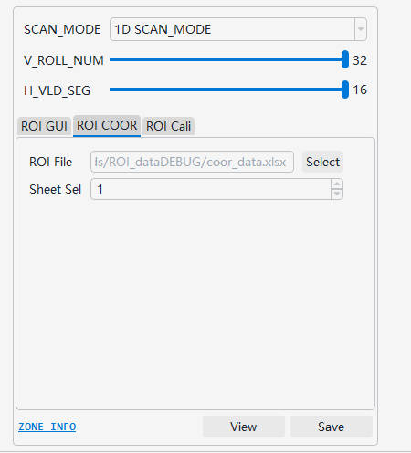
- ROI File: ROI 坐标信息文件, 支持 *.txt, *.csv, *.xls, *.xlsx 格式, 程序自动识别文件类型进行解析. *.txt 标定文件格式说明请跳转 txt 标定文件格式说明 进行查看, *.csv, *.xls, *.xlsx 标定文件格式说明请跳转 csv&xls&xlsx 标定文件格式说明 进行查看
- Sheet Sel: 当文件格式为 .xls or .xlsx 时, 支持指定 sheet 页, 生成 ROI 数据
2.2.2.3 ROI Edit
基于已经生成的 ROI Memory 文件, 解析 & 生成新的 ROI 数据
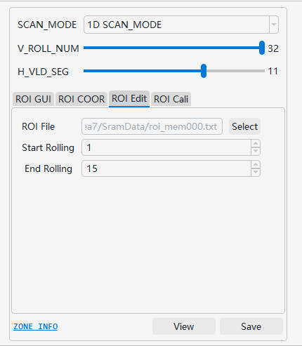
- ROI File: 选择 ROI Memory 数据
- Start Rolling: 截取的起始 Rolling
- End Rolling: 截取的结束 Rolling
View: 查看选择的 ROI File 的 rolling 效果Save: 保存截取的 ROI 数据
2.2.2.4 ROI Cali
该窗口是利用 SpadisApp 采集 Demo ROI 标定数据, 生成 ROI 脚本, 生成的 ROI 脚本用在 Fhr/Phr/Sphr模式
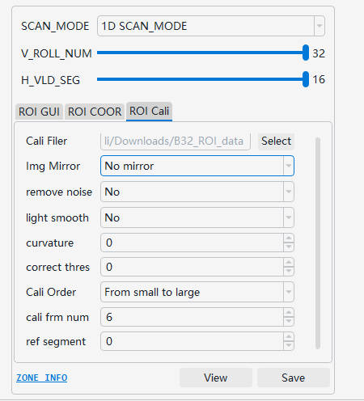
-
Cali File: 选择 ROI 标定数据的目录位置
-
Img Mirror: SpadisApp 采集标定数据时, 存在 X/Y Mirror, 对于标定数据, 需要进行如下处理:
- 若采集的数据在 SpadisApp 上未勾选 X/Y Mirror, 则此处选择No mirror
- 若采集的数据在 SpadisApp 上勾选了 X Mirror, 则此处选择 X-axis mirror
- 若采集的数据在 SpadisApp 上勾选了 Y Mirror, 则此处选择 Y-axis mirror
- 若采集的数据在 SpadisApp 上勾选了 X Mirror & Y Mirrorr, 则此处选择 X-axis and Y-axis mirror
ps: 建议在使用 SpadisApp 采集 ROI 标定数据时, 在Setting界面去除X/Y Mirror
-
remove noise: 是否消除噪点, 如果光条明显, 噪点相对较弱时, 则配置为No
-
light smooth: 光条是否进行平滑处理, 建议设置为Yes
-
curvature: 相邻两段SPAD偏移范围, 超过偏移配置值, 强行矫正标定的 ROI
-
correct thres: ROI 矫正阈值(以 pixel 为单位, 0则不矫正)
-
cali Order: 处理 ROI 数据的顺序, 可选配置: 从小到大 or 从大到小---用户无需关注
-
cali frm num: 采集的标定数据有多帧时, 设置从灰度图中第几帧数据开始处理数据---用户无需关注
-
ref segment: 指定基于那一段segment用于偏移矫正(int), 默认0, 则以最亮段为基准---用户无需关注
-
mode 2D: 仅适用于2D scan模式, 0: 以光条能量优先；1: 以能 Masking的最大光子数优先
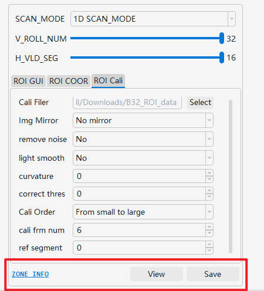
ZONE INFO: 跳转到 ZONE CONFIG 界面, 进行 ROI Memory 其他相关配置. 具体使用说明请跳转 ZONE CONFIG界面介绍 进行查看View: 跳转到 ROI Show 界面, 展示当前窗口下配置的 ROI rolling 效果. ROI Show 界面介绍请跳转 ROI Show界面介绍 进行查看Save: 保存当前窗口下配置的 ROI 脚本
2.2.3 脚本文件相关配置
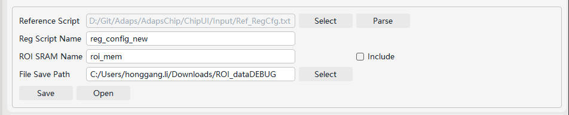
- Reference Script: 基准脚本, 程序会根据选择的基准配置文件以及最新的配置信息, 自动生成新的寄存器配置脚本. 寄存器配置脚本支持的功能请跳转 寄存器配置生成功能说明 进行查看
Parse: 可以解析所选择脚本的寄存器配置, 同时会校验 MIPI WC & FLNR 配置是否正确
- Reg Script Name: 保存的配置脚本名称
- WORK_MODE 为单选时, 脚本名等于
script_name.txt
- WORK_MODE 为多选时, 脚本名等于
work_mode_config_name.txt
- ROI SRAM Name: 保存的 ROI 脚本名称:
roi_mem.txt, 用户可自行修改
Include: 保存脚本时是否需要根据当前界面配置同步生成 ROI Memory 文件
- File Save Path: 文件保存路径
Save: 保存 寄存器配置脚本 及 ROI Memory 数据Open: 打开保存的文件夹
2.3 Zone Config界面
此界面主要针对非 Masking 相关的 ROI Memory 配置
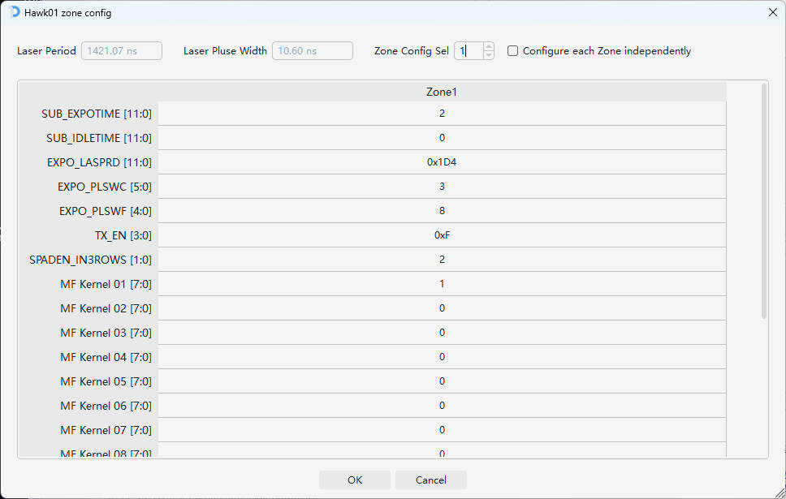
- Laser Period: 根据 Hawk GUI 工具
主界面配置 以及 zone config 界面配置自动计算出的激光重频时间, 无需手动配置
- Laser Pluse Width: 根据 Hawk GUI 工具
主界面配置 以及 zone config 界面配置自动计算出的激光脉宽, 无需手动配置
- Zone Config Sel: 仅在不勾选
Configure each Zone independently 时生效, 所有 Zone 都使用当前指定的 Zone 配置
- Configure each Zone independently: 勾选时, 所有分区的配置都可以单独配置
- Zone Config 界面支持 二进制 / 八进制 / 十进制 / 十六进制 方式输入, 格式分别为:
0b??(0b11) / 0o??(0o55) / ??(100) / 0x??(0xFF)
- Zone Config 界面会对配置值范围进行校验, 配置须符合寄存器定义
2.4 ROI Show界面
此界面主要动态展示 Masking 效果
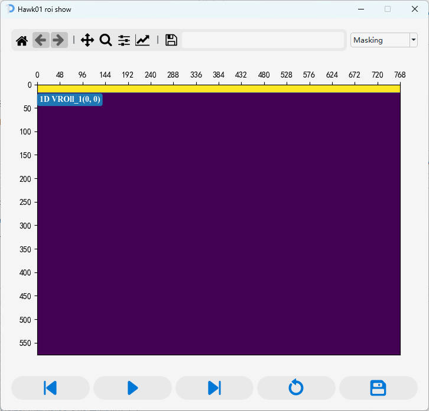
-
可以在左上角界面选择界面展示内容
- 单次 rolling ROI 开启的区域(循环播放)
- PCM 模式下, 所有 rolling 的效果
- PTM 模式下, 所有 rolling 的效果
-
Control Bar, 从左到右, 按钮功能依次为:
预览上一帧暂停 / 播放预览下一帧重播保存
2.5 Hawk01标定文件格式说明
2.5.1 txt 文件格式说明
-
每次Rolling需要指定一个坐标(所有 segment 纵坐标相同), Rolling与Rolling之间的坐标信息需换行配置, 不支持配置在同一行
-
坐标配置顺序需按照Rolling顺序依次配置, 如:
- 1D SCAN_MODE: V_ROLL_NUM=32 为例, 先配置第1次Rolling坐标, 再配置第2次、第3次...
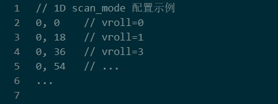
- 2D SCNA_MODE: V_ROLL_NUM=32, H_ROLL_NUM=4 为例:
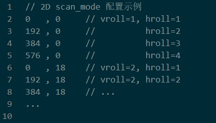
- 配置 vroll=1, hroll=1 简称
1-1 的Rolling坐标
- 配置 vroll=1, hroll=2 简称
1-2 的Rolling坐标
- 再依次配置
1-3、1-4、2-1、2-2...
-
坐标配置格式: x, y分别为横坐标, 纵坐标。支持使用英文/中文的逗号/分号 分隔横纵坐标, 即(,|;|, |；), 禁止使用空格
-
Rolling配置需要与 SCAN_MODE、V_ROLL_NUM、H_ROLL_NUM、H_VLD_SEG 匹配
-
标定文档数据正确性校验, 如: 坐标是否超过(768, 576)校验
-
关于注释: 可使用双斜杠(//)在行尾添加注释或整行注释
2.5.2 csv & xls & xlsx 文件格式说明
- csv & xls & xlsx 配置格式相同
- 坐标配置格式: 在对应 segment 配置纵坐标
- Rolling配置需要与 SCAN_MODE、V_ROLL_NUM、H_ROLL_NUM、H_VLD_SEG 匹配
- 坐标配置顺序需按照Rolling顺序依次配置, 如:
- 1D SCAN_MODE: V_ROLL_NUM=32 为例, 先配置第1次Rolling坐标, 再配置第2次、第3次...
- 2D SCNA_MODE: V_ROLL_NUM=32, H_ROLL_NUM=4 为例, 依次配置
1-1、1-2、1-3、1-4、2-1、2-2...
2.6 寄存器配置生成功能说明
- 系统时钟330、250、200M及分频相关寄存器配置
- Upsampling 寄存器配置
- MIPI 速率 0.8、1.0、1.2、1.5 Gbps/Lane 相关寄存器配置
- MIPI_PKTDLY 自适应配置
- ROI SRAM Block_write 配置
- MIPI WC & FLNR配置
- V_ROLL_NUM、H_ROLL_NUM、H_VLD_SEG、WOKR_MODE、SCAN_MODE等寄存器配置
- MINBIN_THRS、MAXBIN_THRS、V_PXL_OUT_NUM、OUT_BIN_NUM、PKS_ECHO_NUM 等寄存器配置
3 Swan01
3.1 软件介绍
软件整体界面如下
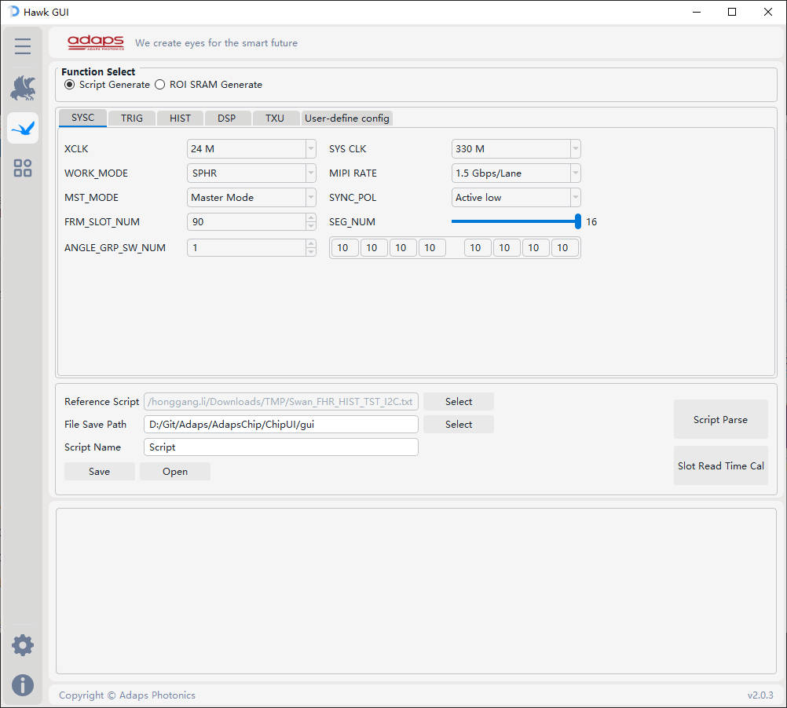
- 软件支持根据配置生成寄存器脚本
- 软件支持根据配置生成 ROI 脚本
- 软件支持根据配置进行读出时间计算
- 软件支持校验寄存器配置的合理性
3.2 Script 配置界面
程序会根据选择的配置, 基于基准脚本, 生成新的寄存器配置脚本. 寄存器配置脚本支持的功能请跳转 寄存器配置生成功能说明 进行查看
3.2.1 SYSC 相关配置
SYSC 配置界面如下, 具体配置功能请查阅寄存器文档
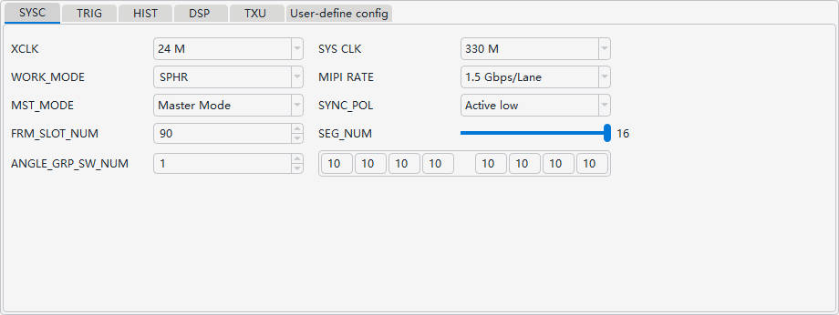
3.2.2 TRIG 相关配置
TRIG 配置界面如下, 具体配置功能请查阅寄存器文档
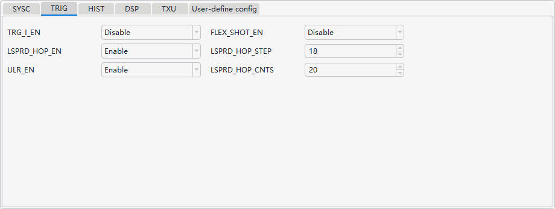
3.2.3 HIST 相关配置
HIST 配置界面如下, 具体配置功能请查阅寄存器文档
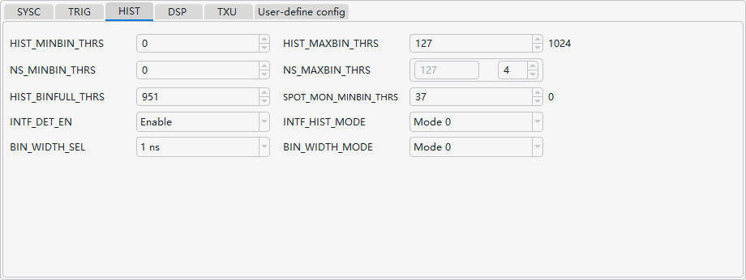
- 基于芯片设置, NS_MINBIN_THRS & NS_MAXBIN_THRS 需要满足一定的配置条件(具体请查阅 User manual), GUI 通过配置
NS_MINBIN_THRS 以及 计算 NOISE 的段数, 自动计算 NS_MAXBIN_THRS
3.2.4 DSP 相关配置
DSP 配置界面如下, 具体配置功能请查阅寄存器文档
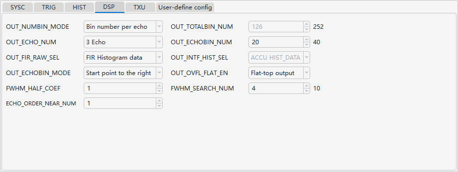
3.2.5 TXU 相关配置
TXU 配置界面如下, 具体配置功能请查阅寄存器文档
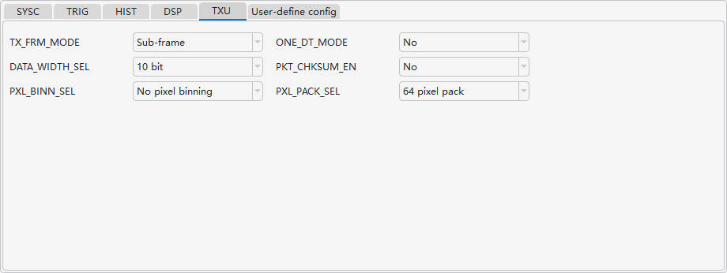
- 基于芯片设置, 软件根据界面配置的 PXL_PACK_SEL, 自动修改 MIPI_PACK_CTRL 下所有寄存器域
- PXL_PACK_SEL 配置的合理性, 软件会自定校验, 若校验不通过, 给出相应提示. 校验主要考虑的场景有: MIPI 组包的合理性, MIPI over_flow, under_flow 的可能性
3.2.6 USER-Define config 相关配置
本软件通用配置中, SYSC_CLK 仅支持 330 / 400 MHz, MIPI 仅支持 0.8 / 1.0 / 1.2 / 1.5 Gbps/LANE, LANE_NUM = 4 的计算方式. 考虑到帧率计算的复杂性, 特意增加本界面, 支持自定义相关配置
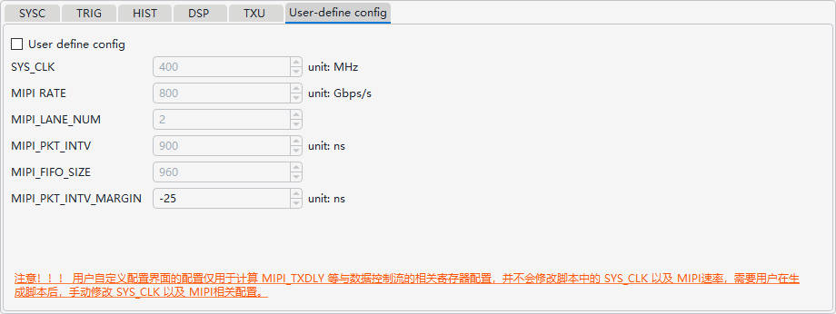
- 用户自定义的配置界面, 用户需要自己保证 SYSC_CLK 以及 MIPI 相关配置的合理性
- 本界面的配置仅用于计算 MIPI_TXDLY 等与数据控制流的相关寄存器配置，并不会修改脚本中的 SYS_CLK 以及 MIPI速率，需要用户在生成脚本后，手动修改 SYS_CLK 以及 MIPI相关配置
- MIPI_PKT_INTV_MARGIN 在用户非自定义配置时生效, 在基于寄存器配置计算的 MIPI_PKT_INTV 的基础上, 手动调整 MIPI 包间隔, 满足用户更多的使用场景
3.2.7 脚本文件相关配置
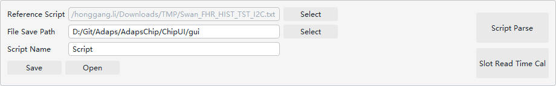
- Reference Script: 基准脚本, 程序会根据选择的基准配置文件以及最新的配置信息, 自动生成新的寄存器配置脚本. 寄存器配置脚本支持的功能请跳转 寄存器配置生成功能说明 进行查看
- Reg Script Name: 保存的配置脚本名称
- WORK_MODE 为单选时, 脚本名等于
script_name.txt
- WORK_MODE 为多选时, 脚本名等于
work_mode_config_name.txt
- File Save Path: 文件保存路径
Script Parse: 可以解析所选择脚本的寄存器配置, 同时会校验 MIPI WC & FLNR 配置是否正确Slot Read Time Cal: 根据界面配置自动计算单个 SLOT MIPI 的读出时间Save: 保存 寄存器配置脚本 及 ROI Memory 数据Open: 打开保存的文件夹
3.3 ROI 配置界面
程序会根据选择的配置, 生成 ROI .txt 文件
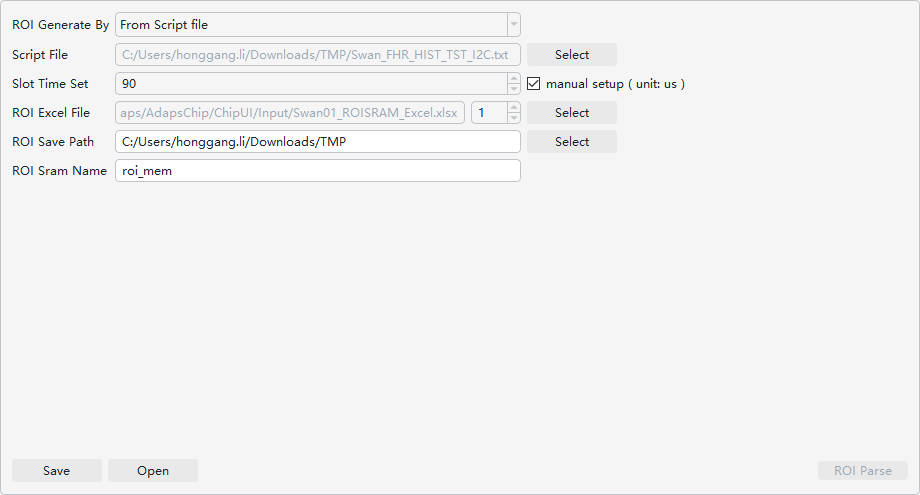
- ROI 支持根据 GUI 界面的配置生成 ROI, 或者根据选择现有的脚本配置生成 ROI
- 影响 ROI 配置主要有 ULR_EN, 跳频功能(影响曝光时间) 以及 数据读出时间
- ROI 生成时, 主要配置来源于 Excel
- 用户需要保证 Excel 格式的正确性, 请使用指定的 Excel 模板
- 所有配置为
16进制 格式
- 用户需保证手动填写的配置正确性, 软件未增加任何 check 功能
- 支持用户手动设置 SLOT_TIME, 但是需要保证用户手动输入的 SLOT_TIME 大于 MIPI 读出时间 (本软件也会check SLOT_TIME 设置的正确性)
- 对于保存的 ROI, 若 GRP_SW_NUM >=4 时, 会生成多个 ROI 文件, 文件名中包含的 index 自动递增, 用户需要手动的根据 Script 文件配置的 ROI_SRAM_NUM, 将 ROI 写入到对应的 ROI_SRAM中,并非一定是
roi0.txt -> ROI_SRAM0, roi1.txt-> ROI_SRAM1
3.4 寄存器配置生成功能说明
- None
3 软件设置界面
此界面主要为软件通用配置
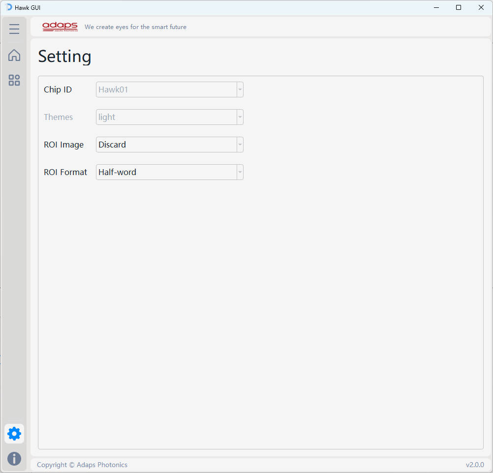
- Chip ID: 目前仅支持 Hawk01
- Themes: Not supported yet
- ROI Image: ROI 数据保存时, 是否同步保存 ROI Masking 相关图片(图片内存偏大, 保存时速度较慢)
- ROI Format: ROI 数据保存格式, Half-word or Byte